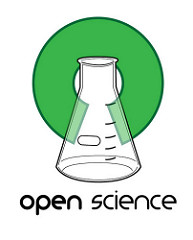
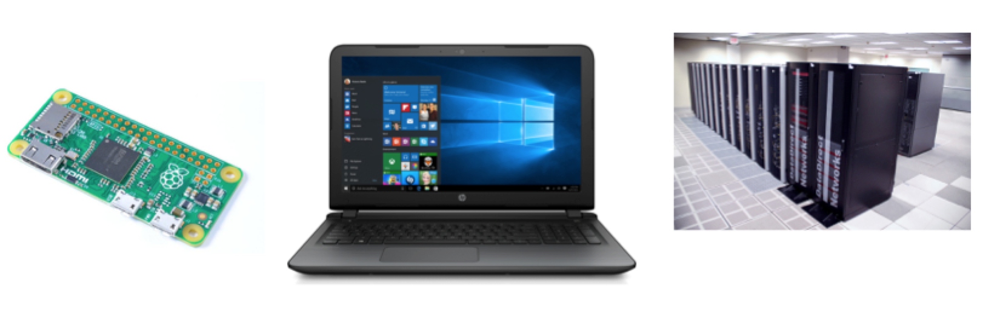
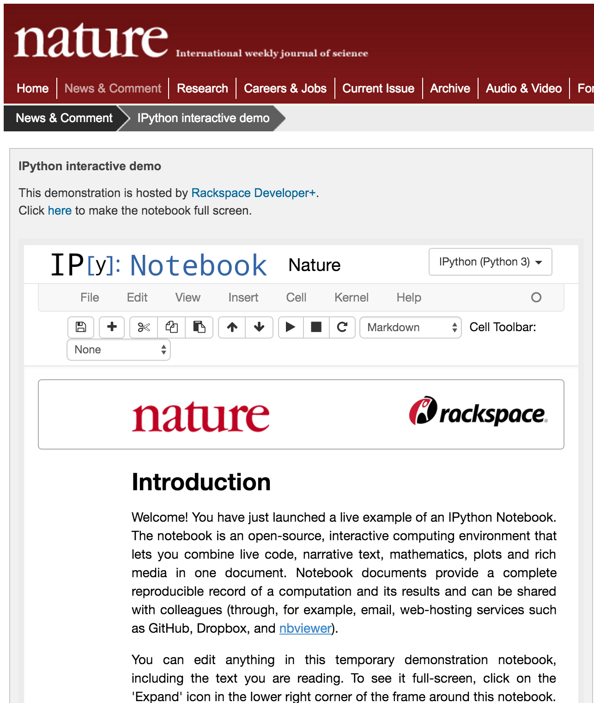
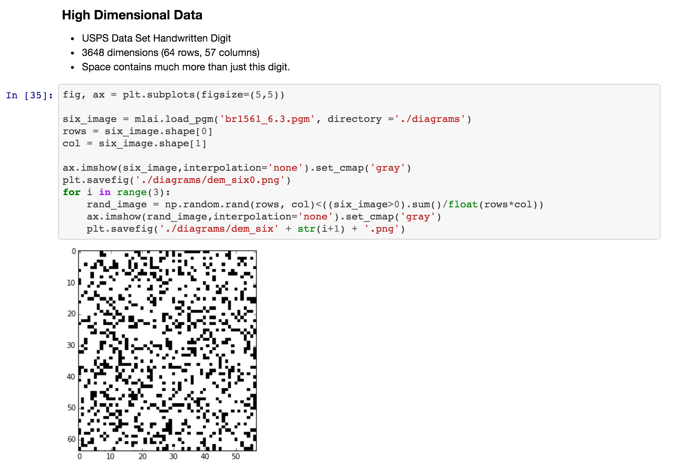

Juptyer notebook
A new way to teach computation
Mike Croucher
EPSRC Research Software Engineering Fellow
www.walkingrandomly.com@walkingrandomly
M.Croucher@Sheffield.ac.uk
Sheffield Open Data Science Initiative
2 RSE Fellows in Sheffield
First Fellowship of its kind

Research Software at Sheffield
rse.shef.ac.uk
Demo
Fourier Series
Jupyter: What is it?
Free
Jupyter: What is it?
Cross Platform
Jupyter: What is it?
Any type of computer Jupyter: What is it?
The future of academic publishing Jupyter: What is it?
The future of delivering lectures Jupyter: In use at Sheffield
Jupyter in the cloud

SageMathCloud Demo
SageMathCloud benefits
Students only need a browserSageMathCloud benefits
Jupyter with R, Python, Julia, Octave and SageSageMathCloud benefits
Easy course administrationSageMathCloud benefits
Linux terminal accessSageMathCloud benefits
Superb supportSageMathCloud benefits
Automatic back-upsSageMathCloud benefits
InexpensiveSageMathCloud benefits
No need for managed desktopSageMathCloud benefits
Students keep all work when they leaveSageMathCloud usage Worldwide
https://github.com/sagemathinc/smc/wiki/TeachingThe Future?
Fully interactive, computable lecture notes for the entire syllabus?A collaboration between lecturers and Research Software Engineers?